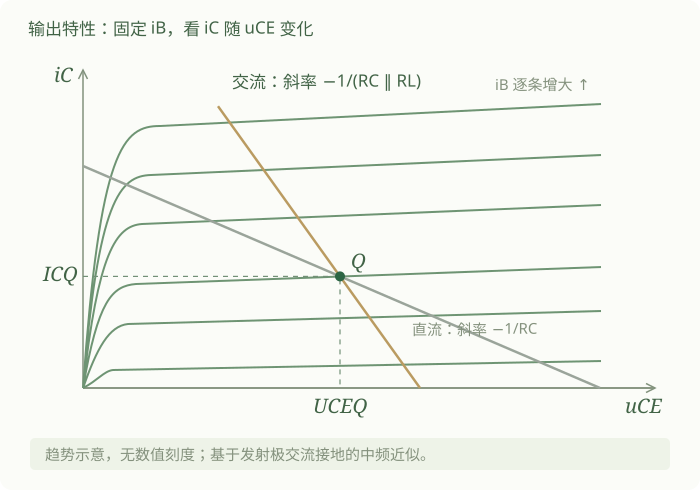
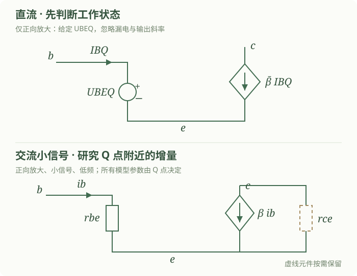
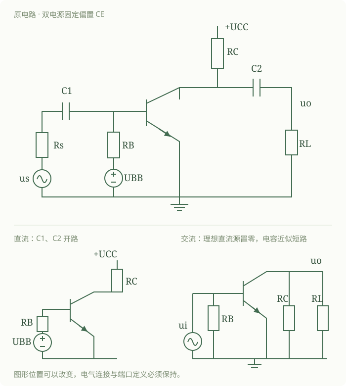
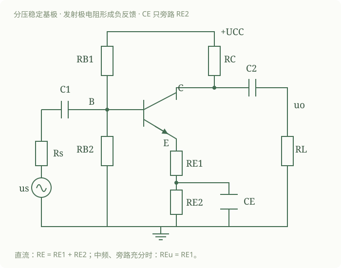
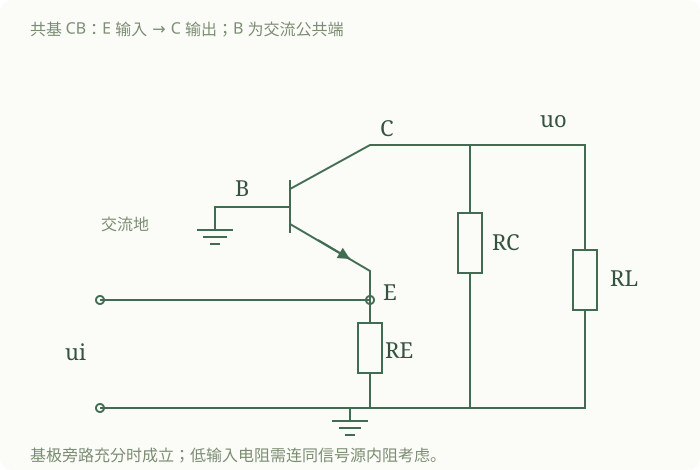

3.1 双极型晶体管
本节前三大板块以手写部分 1 的图 1—11 为主；第四板块承接图 12—13，补全原稿尚未写出的模型。原图可在文末的材料表回看。
一、定义与结构
我的原始理解与记录｜手写部分 1 · 图 1｜定义与结构
第 3 章 双极型晶体管及其放大电路基础。3.1 双极型晶体管。
定义与结构：
是什么：简称晶体管，是由三层杂质半导体材料（PN 结）组成的有源器件。（又称三极管 / BJT）
基本结构：一个晶体管的结构如下图所示。共有 2 种结构：NPN 与 PNP。
以 NPN 为例：由三个区域、两个 PN 结、三个电极组成。
三个区域为：发射区 E、基区 B、集电区 C。对应的 3 个电极为：发射极 E、基极 B、集电极 C。
3 个区域会形成 2 个 PN 结：E—B 为发射结，B—C 为集电结。PNP 结构也是同理。
2 者的电路符号为：[NPN、PNP 符号与区域示意图见原图]。箭头为发射极的电流方向。
核对判断：表述需要澄清，不否定原有结构框架。
需要修正的地方： “三层杂质半导体材料（PN 结）”中的括号易把“区域”和“结”当成同一物体。
为什么需要修正： 半导体区是材料区域，PN 结是相邻 P、N 区的接合处；三个区形成两个结。依据李会方 BJT 课件的结构图。
修正后的理解： BJT 有三个半导体区、两个相互关联的 PN 结、三个电极。箭头所指是发射极的常规电流方向，电子运动方向与之相反。
我的原始理解与记录｜手写部分 1 · 图 2 上半｜结构特点
① 发射区相对基区掺杂浓度很大，以便有足够的载流子供“发射”。
② 基区很薄，掺杂浓度低于发射区，为减少载流子在基区的复合机会。
③ 集电区掺杂浓度低，且结面积大，为吸纳收集发射过来的载流子。
掺杂浓度：发射区 > 集电区 > 基区。
由此观之，BJT（双极型晶体管）的内部结构是非对称的，这也是其拥有放大作用的内部条件。
核对判断：正确的直观理解；掺杂排序需要条件。
需要修正的地方： 保留“非对称”作为理解主线；三级掺杂排序不作为所有 BJT 的定义。
为什么需要修正： 器件结构和工艺会影响各区的具体浓度。发射效率与基区输运首先依赖发射区相对基区重掺杂、基区薄等条件。李会方课件与主教材在本章使用常见结构示意，并非给出所有工艺的统一排序。
修正后的理解： 在常见用于放大的 BJT 中，E、C 不对称，不能随意互换。原稿的结构性直观保留；三级排序只随具体教材示意或器件条件使用。
三个区、两个结、三个极构成 BJT（3.1.1）
教材知识·归纳结论。 双极型晶体管 BJT 是具有 NPN 或 PNP 三个半导体区、两个相互关联的 PN 结和三个引出电极的有源器件。发射区 E、基区 B、集电区 C 分别引出发射极 e、基极 b、集电极 c；E—B 之间是发射结，C—B 之间是集电结。两个独立二极管简单拼接不能代替 BJT。
AI 旧版转述（非逐字原稿）·理解。 先把“区、结、极”分开：区是内部材料，结是相邻区域之间的 PN 结，极是接到外部电路的端子。符号上的箭头标在发射极，表示发射结正向导通时的常规电流方向：NPN 向外，PNP 向内；电子运动方向与常规电流相反。
教材知识·归纳结论。 常见用于放大的 BJT，发射区相对基区重掺杂，基区很薄且轻掺杂，集电区通常比发射区轻掺杂，并采用适合承受反偏、收集载流子和散热的结构。E、C 的结构与功能不对称，不能随意互换。
AI 旧版转述（非逐字原稿）·理解。 发射区负责提供载流子；薄而轻掺杂的基区让大多数注入载流子来得及穿过；集电区接收它们并承受较大电压。这是放大作用的内部基础。
我的理解·上一版摘录（逐字以本次转写为准）（图 2）。
由此观之，BJT（双极型晶体管）的内部结构是非对称的，这也是其拥有放大作用的内部条件。
AI 补充边界。 原图写有“掺杂浓度：发射区 > 集电区 > 基区”。本章保留真正影响机理的比较：发射区比基区重掺杂、基区薄、集电区比发射区轻掺杂。不同工艺的集电区与基区掺杂排序可能不同，不能把这条三级排序当作所有 BJT 的定义。
二、工作特点与原理
我的原始理解与记录｜手写部分 1 · 图 3｜不同工作状态
BJT 的不同工作状态：
① 发射结正偏、集电结反偏时，处于放大状态，对 NPN 来说，。
② 发射结正偏、集电结正偏时，处于饱和状态。
③ 发射结反偏、集电结反偏时，处于截止状态。
④ 发射结反偏、集电结正偏时，处于倒置放大状态。
双极型晶体管在不同的外部条件下表现出不同的特点，其中放大是 BJT 最主要的外部条件。
放大的内部工作原理：[原图保留 NPN 三个区、载流子箭头、、 的连接。空心点为空穴，实心点为电子。]
核对判断：措辞与近似范围需要澄清。
需要修正的地方： “放大是最主要的外部条件”中的“放大”实际指工作状态；截止的“两结反偏”是典型情形，不是所有近似截止的唯一判据。
为什么需要修正： 外部条件是结偏置，放大／截止是由器件与偏置共同决定的状态。华成英辅导书印刷页 9 用开启电压近似判工作区，和理想结偏置定义的层级不同。
修正后的理解： 两结偏置表保留；本章主要研究正向放大。工程上没有明显发射注入即可近似截止，勿把正向微小电压自动等同明显导通。
正向放大要求发射结正偏、集电结反偏（3.1.3）
教材知识·归纳结论。 正常正向放大需要相应的内部结构，并使发射结正偏、集电结反偏，同时避免击穿。在具有明显导通电流的硅 NPN 管中，通常有 。仅有电位排序还不能指定电流大小，仍须结合器件特性与外电路。
我的理解·上一版摘录（逐字以本次转写为准）（图 2）。
准确来说，是一种控制作用：输入较小量却可输出较大量。以小的输入控制大的输出，如同“放大”。
在输入端用一个小的变化量去控制能源，使输出一个大于输入的相应的变化量。
AI 补充理解。 信号决定输出怎样变化，直流电源提供主要能量。谈“电流放大”“电压放大”时必须指明输入、输出量；晶体管的电流分配关系与整个电路的电压增益是两层问题。
两个结的偏置决定四种工作状态
教材知识·归纳结论。 未击穿时，按两个结的偏置，BJT 可分为下列四种状态。表中的正、反偏是 PN 结两侧电位的比较；近似截止还包括发射结正向电流小到可忽略的情形。
| 状态 | 发射结 | 集电结 | NPN 的结电压关系 | 本章的用途 |
|---|---|---|---|---|
| 正向放大 | 正偏 | 反偏 | ，且有合适的电流 | 线性放大 |
| 饱和 | 正偏 | 正偏 | 开关导通或放大失真 | |
| 截止 | 无明显正向注入，典型为反偏 | 通常反偏 | 典型为 | 开关关断或放大失真 |
| 反向放大 | 反偏 | 正偏 | E、C 作用倒置，性能通常较差 |
AI 补充推理。 NPN 的发射结是 P 基区对 N 发射区； 为正偏。集电结是 P 基区对 N 集电区； 为反偏。PNP 时电位次序反转，正向放大为 。
原稿修正。 图 11 最后把“正偏”改成了“超过开启电压才算正偏”。应分开：正偏是偏置极性的定义；明显导通是电流大小的近似判断。正向 仍是正偏，只是常温硅管的电流可能很小。 是常用导通压降估值，没有绝对突变的开启门槛。
我的原始理解与记录｜手写部分 1 · 图 4｜发射、扩散复合、收集
① 发射区向基区发射粒子——电子。
由于发射结是正偏的，在 区域中，多子的扩散占主导，则有电子从 ，有空穴从 ，前者形成 ，后者形成 ，电流方向从 P 指向 。
但由于基区掺杂浓度远小于发射结浓度，，近似认为发射极电流 。
② 电子到达基区后边扩散边复合。
由于发射极中 的注入，P 区内靠近 区的 浓度大，靠近 N 区的 浓度小，故 会发生扩散，在扩散途中 也会不断与 复合。为了补充损失的 ，外接电源会向 B 极输送 ，形成电流 ，方向为从基极 B 流入晶体管。
由于基区掺杂浓度低且薄，所以大部分 都穿过基区流向集电区，少部分被复合，故 很小。
③ 集电区收集扩散过来的电子。
对于集电结而言，PN 是反偏的，漂移加强，即电子从 ，空穴从 ，前者形成 ，后者形成 ，电流方向从 N 指向 P。
由于电子数目多且 是由本征激发的少子 形成的反向饱和电流，所以 ，集电极电流近似为 （但 受温度影响大）。
综上，不难发现，晶体管内部有 2 种载流子共同参与导电，但主导该过程的是由发射极发出、经过基区、由集电区接收的自由电子，其为主过程，其余为次。
[蓝笔补记] 故称为“双极型晶体管”。[“发射极”旁另有“区”的改字，保留见影印。]
核对判断：主体推理正确；漏电分量有实质性遗漏。
需要修正的地方： “发射结浓度”应指发射区掺杂浓度；把整个反向漏电流只归给少子空穴并不完整。
为什么需要修正： 发射、基区扩散复合、集电结收集的三步解释是有效主干。反偏 PN 结的少数载流子电流包含两侧贡献，不只有空穴；原稿中的注入电子收集电流也不能与本底漏电混为一项。依据李会方 BJT 课件的载流子过程。
修正后的理解： NPN 主要由注入电子形成集电极电流，同时保留小的反向漏电。、 都是在相应小分量可忽略时的近似；PNP 的载流子角色相反。
发射、扩散与复合、收集共同形成三极电流
教材知识·归纳结论。 对正向放大的 NPN 管，发射区向基区注入的电子，大多数穿过基区后被集电结电场收集，少数在基区复合；基极电流主要补充复合所需的空穴，并含基区向发射区的空穴注入等分量。因此通常 与 接近，而 较小。
AI 旧版转述（非逐字原稿）·理解。 保留原稿的三步：
- 发射区向基区发射电子。 发射结正偏，电子从 N 发射区向 P 基区注入，同时也有空穴向发射区注入；重掺杂发射区使电子注入占主要部分。
- 电子在基区扩散，少部分复合。 发射结一侧的过剩电子浓度高，集电结一侧低，浓度梯度推动扩散。基区薄而轻掺杂，复合比例小；外电路通过基极补入空穴。
- 集电区收集到达集电结的电子。 集电结反偏，空间电荷区中的电场将到达边缘的电子扫入集电区。集电结仍有本身的反向漏电流，但在常用工作电流下通常较小。
我的理解·上一版摘录（逐字以本次转写为准）（图 4）。
晶体管内部有 2 种载流子共同参与导电，但主导该过程的是由发射极发出、经过基区、由集电区接收的自由电子，其为主过程，其余为次。
AI 补充说明。 这段原话针对 NPN 管；PNP 中主导载流子换为空穴。两结通过同一个很薄的基区相互影响，正是两个独立二极管不能替代 BJT 的原因。
电流守恒是严格约束，放大系数关系带有模型条件
教材知识·归纳结论。 按本章 NPN 方向约定，总电流恒满足 KCL：。在正向放大、给定工作范围内，采用含漏电流的简化模型，可写
适用条件与符号。 是发射极开路时集电结的反向漏电流。只有漏电流相对工作电流可忽略时，才用 、；这些式子不适用于饱和状态。
AI 旧版转述（非逐字原稿）·理解。 原稿把“分配关系／放大关系”放在同一处很有价值： 接近 1，说明发射极注入的电流大多到达集电极； 较大，说明剩余的基极电流很小。不是从基极输入的一小股电流被凭空复制出能量。
AI 旧版转述（非逐字原稿）·载流子分量。 沿用图 5 的电流分量大小记法， 是发射结电子注入分量， 是空穴反向注入分量， 是被收集的注入电子形成的分量， 是基区复合所需分量，则
AI 补充推理。 把 代入 ，移项得 ，于是得到含漏电流的共射式。原稿用 直观解释 时，已隐含忽略空穴反向注入等分量；严格计算应采用端口电流和规定的漏电修正。
AI 补充例子。 时，。忽略漏电，若 ，则 ，。
我的原始理解与记录｜手写部分 1 · 图 5｜电流关系与控制关系的思考
电流关系：
且由 KCL 可得：。
简画一个基本的 BJT 电路图：[见图 5]。在使用 BJT 时，一般将 作为输入， 作为输出，认为由 对 进行放大控制。
但这个是一种人为规定的便于使用的关系，接下来进行解释：
由图可知，该图可以看作由 2 个网孔构成： 与 ，B 网孔的网孔电流为 ，C 的为 ，而 （2 者交汇处）。整个电路外接了 2 个重要电源： 与 。
其中， 为正偏电压，其大小决定了主过程电子的多少，影响 的大小；而 为反偏电压，其大小几乎不会影响 3 个电流的大小，其负责提供能量。
故而不难看出，B 回路可显著影响 C 回路，C 回路却无法显著影响 B 回路，故自然而然地看作 B 控制 C。当然，实际上是由 控制 与 ， 与 是一个整体，本身无控制关系，但由于内部结构规律， 与 有固定关系，即 （ 为放大倍数）。
为了方便，用 控制 来代替 B 回路控制 C 回路，B 回路为输入回路， 为～；C 回路为输出回路， 为～。
核对判断：有价值的模型思考；“固定关系”需补条件。
需要修正的地方： 不能把“人为规定”理解成物理关系任意； 与三电流近似无关、 都受模型与工作区约束。
为什么需要修正： 两个回路通过同一器件耦合，这是原稿抓住的重点。输入端口的选择是人为的，器件的注入、复合、输运过程是物理约束。输出供电不足会使器件饱和，输出特性的有限斜率也带来影响。
修正后的理解： 在正向放大且忽略反向影响、漏电和参数变化时，可用 ；也可用结电压描述注入。把“用哪一种模型描述控制”与“是否存在器件约束”分开，保留两回路的原始思考链。
输入回路与输出回路通过器件特性相互联系
AI 补充·模型结论。 在正向放大、忽略 Early 效应与反向传输的简化模型中，给定基极电流可用 确定集电极电流；输出回路的电源与电阻还必须允许这股电流流通。输出条件不满足时，管子会离开放大区。
我的理解·上一版摘录（逐字以本次转写为准）（图 5）。
但这个是一种人为规定的便于使用的关系，接下来进行解释。
B 回路可显著影响 C 回路，C 回路却无法显著影响 B 回路，故自然而然地看作 B 控制 C。
AI 补充理解。 你的重点是：输入和输出的选取服务于电路分析， 是同一器件的整体行为。这里保留“便于使用的描述关系”，同时补足物理层面：正向注入由结电压决定，常用近似为 ； 是另一种常用端口描述。两种模型可以配合使用。
原稿修正。 图 5 的“ 的大小几乎不会影响三个电流”只在放大区、输出特性近似平坦且不触及电源限制时成立。图 6 的“只有一个独立电流变量”同样只指采用固定 、忽略漏电后的三电流关系；不能据此说三端器件只有一个独立电学变量。 仍是器件和外电路共同确定的量。
我的原始理解与记录｜手写部分 1 · 图 6｜独立变量与三种连接
这个电路看似是有 2 个独立网孔、2 个独立电流，但 与 有关联，，故这个电路实际上只有 1 个独立电流变量。
此处插入 BJT 配在电路中的 3 种连接方式：
① 共发射极连接：（CE）基极输入，集电极输出，发射极为公共端。即：，。
即我们上述所说的那些，基础都是 CE（共发射极）。当然，基本思想与工作结构是通的，只是输入、输出以及输入与输出的关系变了。
② 共基极连接：（CB）发射极输入，集电极输出，基极为公共端。即：，。
③ 共集电极连接：（CC）基极输入，发射极输出，集电极为公共端。即：，。
综上，可把放大电路看作一个二端口网络，有一个输出端口、一个输入端口。
核对判断：简化模型下成立的计数；不是完整端口自由度结论。
需要修正的地方： “一个独立电流变量”须限定为固定 、忽略漏电后的三电流关系。
为什么需要修正： KCL 加上所选模型能把三电流用一个电流表示，但 仍参与器件与外电路的约束。三个电流相关不表示三端器件只有一个独立电学量。
修正后的理解： 保留电流变量计数用于简化电路计算；判断工作点时仍需输入、输出回路与工作区校验。
我的原始理解与记录｜手写部分 1 · 图 7｜分配关系／放大关系系数
一个输入回路，一个输出回路。根据输入输出所接极不同，分为以上 3 种连接方式。这 3 种都为放大电路，只是放大的侧重对象（）不同。
分配关系 / 放大关系系数：
① 共发射极直流电流放大系数 。即在共发射极下，输出电流与输入～的关系：
（一般在 20～200 之间）。[蓝笔] 描述了基区中非平衡少子的扩散和复合的比例。
② 共基极直流电流放大系数 。此时发射极输入，集电极输出。
[原稿另写“一般在……之间”，该范围末两位字迹为【原文待核对】；不替换成教材常见值。]
且 ，。
均与 BJT 的基区宽度、掺杂浓度、发射区的掺杂浓度等有关。换言之， 是晶体管本身的特性，由 BJT 的内部物理组成与结构决定。
核对判断：近似结论与符号层级需要说明。
需要修正的地方： 由注入／复合分量定义的比值，与端口直流放大系数之间用了近似；原稿推式中的 有时未加横线。
为什么需要修正： 忽略 等小分量后，分量比才可直接连接到此处的端口式。不同教材也可能直接用 定义工程直流比值。此处不把包含漏电修正的定义与未修正比值强行当成同一定义。
修正后的理解： 原稿记法照录。规范计算中以教材所给定义和条件为准：忽略漏电时 、；小信号系数另用 。数值范围只是常见范围，不是定义。
输入端、输出端与公共端确定三种连接（3.1.2）
教材知识·归纳结论。 常见单管放大器按输入、输出共用的电极分为 CE、CB、CC。这里的“公共”主要指信号的公共参考端，不要求直流电位为零。
| 连接 | 输入电极 | 输出电极 | 公共电极 | 忽略漏电的器件电流关系 |
|---|---|---|---|---|
| 共发射极 CE | B | C | E | |
| 共基极 CB | E | C | B | |
| 共集电极 CC | B | E | C |
我的理解·上一版摘录（逐字以本次转写为准）（图 7）。
可把放大电路看作一个二端口网络，有一个输出端口、一个输入端口。根据输入输出所接极不同，分为以上 3 种连接方式。这 3 种都为放大电路，只是放大的侧重对象（）不同。
AI 补充边界。 表中比较的是晶体管电极电流，整个电路的输入电流还可能分流到偏置电阻，负载电流也不一定等于电极电流。放大倍数须按实际端口重新计算。
我的原始理解与记录｜手写部分 1 · 图 8｜电压放大作用
对于一个共射极放大电路：[见原图上半]。
如图，如果在输入回路中加入微小的输入信号 ，此时接在发射结两端的正偏电压 改变，。
则 增大，根据 PN 结正偏的伏安特性曲线可知， 对 有很强的控制作用， 增大，会引起 变化较大 → ，引起 ，进而引起 的较大变化 。集电极上的负载电阻 把 转换为较大的输出电压变化量 。
由 ，实现了电压的放大。可知：共射极电路既有电流放大能力，也有电压放大能力。
准确来说， 增大，载流子 增多，进而引起 同步增大。
对于一个共集极电路：[原稿此处确写“共集极”；电路图见下半，保留原题注，不在引文中改名。]
也是同理。。从 ，实现了电压放大。
核对判断：电压转换直观正确；标题与带符号增量需修正。
需要修正的地方： 下半页标题“共集极”与电路不一致；上半页 没有标清幅度或符号。
为什么需要修正： 下半页基极是公共端，发射极输入、集电极输出，且用 把 连到 ，符合 CB；这与李会方共基／共集课件的端口定义一致。CE 中电源固定时 。
修正后的理解： 下半页按共基极理解，原题注保留作修正记录。CE 输出对地的带符号增量为 ；若只说幅度，应写 。不改掉“电流变化经电阻变成电压变化”的理解。
电流变化经负载电阻变成电压变化
教材知识·归纳结论。 对发射极交流接地、集电极经 接理想电源的 CE 电路，若无交流负载且保持放大，；有交流负载时改为 。因此电压能否放大还取决于电路电阻与输入阻抗，不能只看 。
AI 旧版转述（非逐字原稿）·理解与推理（图 8）。 保留原稿的变化链，并明确反相：
无负载时由 得到负号。输入增大，电流增大， 压降增大，集电极电位反而降低。CB 也可将电流变化转换为电压变化，但输入定义不同，结果同相；CC 的电压增益通常小于 1，却可放大电流和功率。
原稿修正。 图 8 写 时表达的是变化幅度；若表示带符号的集电极电压增量，应有负号。后文所有增益统一区分幅值与符号。
三、伏安特性曲线
我的原始理解与记录｜手写部分 1 · 图 9｜输入特性曲线
伏安特性曲线。晶体管有 3 个极，为了描述其电学特性，我们用 2 个伏安特性，输入伏安特性与输出伏安特性来描述。
普通的二端器件，有 2 个参数： 与 。对于三极管，则有 4 个：。
① 输入特性曲线。描述在 一定的情况下， 与 的关系。即 。
1）。此时集电极与发射极短路，集电结不收集 ，整个 BJT 类似于一个 PN 结： 时，截止，； 时， 与 关系近似于 PN 结。
2） 时。来说明一下此时 的影响，在该区间内，，会使基区变窄，集电区变宽（基调效应），进而使在基区的复合概率下降，使得在 相同的情况下 略变小， 略变大（也就是影响了分配关系 ）。
3） 时。当 大于一定电压值时，基区大部分 都进入了集电区， 的改变不再对 有明显的影响。
[保留原图：横轴 ，纵轴 的单位字迹【原文待核对】；三条曲线标 、、。]
核对判断：曲线思路正确；器件区域与近似需要澄清。
需要修正的地方： “集电区变宽”不应理解成准中性集电区整体变宽； 时不等于两个结中仅剩一个结。
为什么需要修正： 反偏增大使集电结耗尽层扩展并压缩有效基区。 外部短接时，B 对两个同类型外区形成两个结的端口组合，输入特性呈二极管样并不等于内部只剩一个 PN 结。
修正后的理解： 保持“固定一个量看另两个量”的读图法。 没有在原稿中确定，不填猜测值；进入常用放大范围后，输入曲线差异常可近似忽略，但并非严格为零。
输入曲线在固定输出电压下描述输入电流（3.1.4）
教材知识·归纳结论。 共射输入特性是保持 不变时， 随 的关系，写作 。在正常工作范围，形状类似正向 PN 结特性： 增加， 非线性上升。它不是一个固定电阻。
AI 旧版转述（非逐字原稿）·理解。 两端器件的一条 — 曲线可描述端口关系；共射 BJT 有输入、输出两组量 ，所以画一组曲线时，要固定另一个输出条件。
AI 旧版转述（非逐字原稿）· 的影响（图 9—10）。 与正常放大时的输入曲线不同。 增大、集电结反偏增强后，基区有效宽度会改变，复合与电流分配也可能改变；进入正常放大工作范围后，不同 的输入曲线通常已很接近，手算常忽略该影响。
原稿修正。 原稿用未定数值 划分“ 后完全无影响”。没有适用于所有晶体管的统一 ，也不存在普遍的“完全无影响”。本文保留趋势与近似条件，不为原稿中的 猜一个数值。
我的原始理解与记录｜手写部分 1 · 图 10｜由输入曲线到输出曲线
综上，若 固定， 与 的关系有类似 PN 结的特性，即： 时，截断； 时， 随 增大呈指数增长关系。
而 对 的影响：（某一值）时，随着 ， 略有 ↑； 时，对 无影响。
② 输出特性曲线。描述的是 为常量时， 与 间的关系。即 。
对于每个 都有一个对应的特性曲线 ，故而输出特性是一簇曲线。
而对每一条曲线而言：当 从 0 逐渐增大时， 随之增大；到 达到一定值后， 不受 影响；当 过大时，会引起集电结反向击穿， 剧增。
接下来阐述放大、饱和、截止 3 大工作状态。[图中的放大区、饱和区、截止区、击穿区与曲线族均保留在影印页。]
核对判断：需要补充近似条件。
需要修正的地方： “达到某电压后无影响”不能理解成严格不变。
为什么需要修正： 图上曲线近似水平是简化模型，而真实器件存在有限输出斜率。图 9 的“没有明显影响”比本页“无影响”更接近工程近似。
修正后的理解： 固定 时，常用放大区内 对 的依赖较弱，可按题意忽略；接近饱和或击穿时不能沿用。保留两页原来的措辞差别。
输出曲线在固定基极电流下区分放大、饱和与截止
教材知识·归纳结论。 共射输出特性是 ；不同 对应不同曲线，合起来是一族曲线。保持正向放大时，每条曲线通常较平坦；小 时进入饱和区；无明显发射注入时接近截止；超过耐压可能击穿。
AI 图示｜沿用上一版。

AI 旧版转述（非逐字原稿）·理解。 查曲线要先看“固定了谁”：固定 沿一条曲线移动，才是在看 的影响；改变 则切换到另一条曲线。放大区内“近似水平”意味着可近似用受控电流源描述，不能解释成 不受输入影响。
我的原始理解与记录｜手写部分 1 · 图 11｜三大工作区与自己的补注
1）放大区。条件：此时发射结正偏（），集电结反偏（）。特征：此区域内， 几乎只受 影响，对于给定的 ， 特性曲线在放大区内趋于水平。
2）饱和区。将各条输出特性曲线的上升区域称为饱和区。
条件：发射结正偏（），集电结也正偏（）。
特征：由于集电极处正偏，接受 的能力很小，也因此 会变小。且在此区域， 的变化难以引起 变化，也即 无法控制 （因为此时影响 的主因是 ）。[蓝笔] 处于饱和区时， 绝对值很小且几乎不变，称为饱和压降，记作 。
临界饱和： 时，处于临界饱和状态。
3）截止区。 时对应的区域称为截止区。条件：发射结反偏（），集电结也反偏（）。
特征：无法发射，无法接收，无论 如何变化， 都近于 。[在“无论”旁加注：在该条件下。]
注：在前面我们就将其认为 即发射结正偏，实则 才是正偏，正如 PN 结一样， 时 很小，认为此时未导通， 时才认为导通。
核对判断：正偏定义有实质性混淆；其余多为近似范围问题。
需要修正的地方： 原稿末注把“正偏”与“超过开启压降才明显导通”混为一谈；“饱和时电压固定”只适合较深饱和的估算。
为什么需要修正： 正偏由 PN 两侧电位极性定义，正向电流连续随电压变化。，所以 是集电结零偏边界，不是深度饱和的固定压降。华成英印刷页 9 的开启压降判据是工程分区近似，不是另一个正偏定义。
修正后的理解： 正偏与明显导通分别判断。正向放大采用给定 ，饱和后改用相应模型，不能用“输入完全不起作用”概括所有饱和情况。截止零电流是未击穿、忽略漏电时的近似。
教材知识·归纳结论。 NPN 在有明显发射注入的前提下，集电结反偏对应 ； 即 ，是正向放大与集电结开始正偏的边界； 表示集电结正偏。工程估算深度饱和时，常取 —，具体值依工作电流和驱动而变。
AI 补充理解与推理。 。两个结都正偏后，集电极电流不再按正向放大区的 增长；它受到外部供电与电阻限制。但“饱和时不能再套 ”不等于“任何输入变化都绝不影响 ”。
原稿修正。 图 11 同时写了“临界饱和 ”与“饱和区电压很小且几乎不变”。前者是结偏置边界，后者是较深饱和时的近似模型，不能把两者当成同一个电压。原稿“ 会变小”的比较也要固定条件：保持 、逐渐降低 时，曲线进入膝区后 才明显下降。
教材知识·归纳结论。 普通放大电路的近似截止指发射结的正向注入小到可以忽略，此时常取 ；发射结并非必须反偏。若按基极开路测量，实际还有 ，所以 也不严格推出 。
AI 补充理解。 零电流是忽略漏电后的工程近似。击穿后该近似不成立；“无论 如何变化电流都为零”必须限定在未击穿且无其他正向注入的范围内。
参数、温度与选型围绕工作范围理解（3.1.5—3.1.7）
教材知识·归纳结论。 静态参数描述工作点，小信号参数描述该点附近的变化。低频下，； 则是忽略漏电后的静态比值。两者可接近，但不是定义相同，也不随电流、温度、频率永远不变。
AI 旧版转述（非逐字原稿）·理解。 的大小与基区宽度、掺杂和输运过程相关。这延续了原稿“分配关系来自结构”的思路；补充的一点是工作条件也会改变参数。
教材知识·归纳结论。 温度升高，在常用工作范围内，漏电流通常增加，固定集电极电流所需的 通常下降；硅管常用估值约为每升高 下降 ，只作局部近似。 的变化取决于器件和工作点，不能当作任意温度下必然单调的定律。
AI 补充理解。 图 2—4 的课本材料给出温漂趋势和经验数字；对本章最有用的联系是：这些变化会使固定偏置的 Q 点漂移，因此 3.4 要引入稳定偏置。这里区分“固定电流比较所需电压”和“固定电压比较产生电流”，避免混淆控制条件。
教材知识·归纳结论。 选型应同时检查所需电流、耐压、耗散功率、频率和增益范围，并满足器件的安全工作区与散热条件。 只是本章常用耗散估算； 等极限不能相互替代，也不能都按最大值同时使用。 是规定工作条件下共射小信号短路电流增益幅值降至 1 的频率，不是整个放大电路的上限频率。
AI 补充理解。 电流或电压单项未超限，仍可能因为两者乘积过大而过热；温度变化还会改变允许耗散。只写“选 最大的管子”不能保证合适。本节只保留用于本章分析的选型意识，具体设计以器件数据手册为准。
四、晶体管等效模型（3.1.8）
原稿图 12—13 先分“直流模型／交流小信号模型”，再按工作状态细分；下面沿用该结构。直流模型的骨架来自原稿，小信号模型是 AI 根据教材补全。
我的原始理解与记录｜手写部分 1 · 图 12｜等效模型与“拼装积木”
晶体管的等效模型。
首先，晶体管在电路中有 4 个参数：。
其次，BJT 在直流、交流状态下表现出不同特征，故分为直流模型与交流模型。
第三，BJT 有 3 种工作状态：放大、饱和、截止。但 BJT 本就用于放大信号，故只讨论放大状态下的交流模型。
最后，什么是等效、如何等效？在电路中的等效，就是保证电路特性即在电路中的作用不变的前提下，把复杂的陌生的元件变成简单的、熟悉的元件的组合。故而先求得电路特性，再用基础元件像拼装积木一样组合。
1．直流电路模型。
1）放大状态。 固定，为 ； 受控于 ，。[原图：B—E 电压源、C—E 受控电流源。]
2）饱和状态。 不受 控制。 绝对值小且几乎不变，近似为 。 固定。[原图：两个给定压降。]
核对判断：“拼装积木”是正确直观；需给模型使用范围。
需要修正的地方： “BJT 本就用于放大信号”在本章可作学习范围说明，不是 BJT 的全部用途；直流／交流模型的差别不是器件换了物理机制。
为什么需要修正： BJT 也用于开关。华成英印刷页 36 的小信号模型参数由 Q 点决定；直流分段估算保留的是另一层端口关系。
修正后的理解： 保留“作用不变”“拼装积木”的原话，在所研究工作区与信号范围内理解等效。本章补充正向放大 Q 点附近的小信号模型，原稿留白仍清楚可见。
我的原始理解与记录｜手写部分 1 · 图 13｜截止模型与尚未写完的标题
3）截止状态。，。均开路。[原图保留三个端点的开路模型。]
2．放大状态的交流小信号电路模型。
[该标题下原稿留空。后面的模型和推导来自 AI 补充，不作为原稿复原。]
核对判断：工程近似，补充条件即可。
需要修正的地方： 零电流和开路不作真实器件的无条件精确结论。
为什么需要修正： 截止模型忽略了漏电；高电压击穿时更不适用。
修正后的理解： 未击穿、无明显发射注入且漏电可忽略时，用开路模型。小信号部分原稿确实未写，不把后补内容标作你的原话。
直流模型按工作状态替换器件
教材知识·归纳结论。 直流估算先假定状态，再用相应模型求解，最后校验偏置是否符合假定。常温硅管可按题目取 ；饱和模型通常另给 与 。这些是分段近似，不是所有电流下的器件常数。
| 状态 | 原稿模型的整理 | 必须补上的校验 |
|---|---|---|
| 正向放大 | B—E 用给定正向压降；C—E 用 受控电流源 | NPN 应有明显导通且 ，电流和耗散允许 |
| 饱和 | B—E、C—E 取题设饱和压降 | 两结正偏；由外电路算 ，不再套正常 |
| 截止 | 忽略漏电时三个极的导电支路开路 | 没有明显正向注入且未击穿 |
我的理解·上一版摘录（逐字以本次转写为准）（图 12）。
最后，什么是等效、如何等效？在电路中的等效，就是保证电路特性，即在电路中的作用不变的前提下，把复杂的、陌生的元件变成简单的、熟悉的元件的组合。故而先求得电路特性，再用基础元件像拼装积木一样组合。
AI 补充理解。 这里保留的是所研究范围内的端口关系。直流分段模型与 Q 点附近的增量模型，所保留的关系与精度不同，所以每次等效都要先说明范围。
AI 补充边界。 原稿写“直流下表现不同特征，故分为直流模型与交流模型”。更准确地说，直流模型描述静态／大范围非线性关系，小信号模型描述某个 Q 点附近的增量关系；不是一换到交流，器件本身就变成另一种物理元件。
小信号模型是 Q 点附近的局部线性化
教材知识·归纳结论。 在正向放大 Q 点附近、输入增量足够小、频率低到可忽略器件结电容且不发生削顶时，简化共射小信号模型由 B—E 间 与 C→E 的受控电流源 构成：
适用条件与符号。 这里的电流是增量；求 用静态电流 。当取 、忽略漏电时，也可写 。 采用题目给定值，不统一假定成某个固定数。
AI 图示｜沿用上一版。

AI 补充理解。 曲线在小范围内用切线代替： 是斜率的倒数，不是 。直流模型中近似不变的 ，不能用来把交流 也设成零；否则就抹去了信号本身。
进阶补充／适用条件与注意事项 · 原位置保留
AI 补充推理。 把 在 Q 点展开，保留一阶项，可得内基区电压 对电流的增量关系 ，其中 。再用 ，得到 ；外部 B—E 端还含基区体电阻，故 。忽略体电阻时，才能直接写 。
进阶补充／适用条件与注意事项 · 原位置保留
AI 补充适用条件。 理想指数关系的一阶近似要求内结增量幅值 ；“电源电压很小”或“输入只占电源的 1%”不能代替这个条件。发射极负反馈能使外部输入较大，而实际结上的增量仍小。该条件与饱和、截止的摆幅限制须分别检查。NPTEL 的小信号模型说明也以结电压增量相对热电压较小作为线性化条件。
进阶补充／适用条件与注意事项 · 原位置保留
AI 补充·模型结论。 要描述放大区输出曲线的有限斜率，可在模型 C—E 间加入 ；忽略反向传输时，。在固定 的常用 Early 模型中，，最后一步还要求 。固定 的 h 参数输出电阻与该量不是无条件相同，本章在简化近似下统一用 表示输出电阻。
进阶补充／适用条件与注意事项 · 原位置保留
AI 补充理解。 的影响较弱，表现为较大的输出电阻；它从未被定义成完全没有影响。只有 对目标电路结果影响可忽略时，才删去它。MIT 6.012 对基区宽度调制、 的说明用于核对这一补充。
AI 补充例子。 、、，则 。该数值随 Q 点改变；不能把另一道题算出的 直接搬来。
3.2 放大电路的基本概念
按手写部分 2 图 1 的“等效模型与参数 → 组成条件与三种组态”组织。原稿留空的指标解释与条件，以下由 AI 根据主教材、李会方课件与华成英辅导书补全。
一、放大电路的等效模型与性能指标（3.2.1）
我的原始理解与记录｜手写部分 2 · 图 1｜等效模型与参数
BJT → 放大电路。放大电路。
1．等效模型与参数。等效为一个二端口网络。
输入端口：等网络等效为一个电阻。输出端口：网络等效为一电压源 + 一电阻。[图中保留 与电压源的端口示意。]
类比二端网络，重于 的关系，从而使用简单元件等效该 关系。二端口网络重于输入与输出的关系，也可用 easy 元件等效其关系。
参数：① 增益 。
② 输入电阻 ，，反映了……
③ 输出电阻 ，，反映了……
[旁注] 未懂。
2．放大电路的组成条件与三种组态（类型）。条件：[原稿空白]；组态：[原稿空白]。
AI 补充｜保留未完成状态。 “反映了……”和“未懂”原样保留。输入电阻回答信号源接上去会被怎样加载；输出电阻回答负载变化怎样影响输出。下面保留旧版的端口说明与公式，作为对这两个空白的补充，不倒写成原稿已经想通的内容。
二端口模型同时描述输入负担与输出能力
教材知识·归纳结论。 对给定 Q 点、给定频率、线性小信号范围内的近似单向电压放大器，可将输入端表示为 ，输出端表示为受控电压源 串联 。 是空载电压增益；接入 后的端口电压增益为 。有明显反向耦合或电抗时应使用更完整的二端口模型与阻抗。
我的理解·上一版摘录（逐字以本次转写为准）（图 1）。
类比二端网络，重于 — 的关系，从而使用简单元件等效该 — 关系。二端口网络重于输入与输出的关系，也可用 easy 元件等效其关系。
AI 补充理解。 你关注的是“保留什么关系，才算等效”。输入电阻表示信号源接上后会承担怎样的电流；输出的受控源与内阻表示接负载后电压怎样下降。模型不是仅画出三个符号，还必须说明增益是空载还是带载。
增益须先确定端口、负载与相位
教材知识·归纳结论。 在线性正弦稳态下，以同一频率、同一相量约定定义
适用条件与符号。 无量纲；互阻 单位 ，互导 单位 。 取流入负载正端。功率增益 使用平均信号功率；纯电阻端口、有效值约定下，。
AI 补充理解。 是信号源电压， 是已接入放大器的端口电压；二者中间可能隔着 。 为负，在本章中频实数近似下表示反相，不表示幅度是“负的”。
教材知识·归纳结论。 当输入、输出端口均可按实电阻处理时，源内阻和输出内阻的分压分别给出
AI 补充推理。 第一式来自输入分压，第二式来自输出戴维南模型，第三式将 拆成 与 。反向耦合明显时，模型参数可能依端接条件而变，不能照搬三个独立常数。
AI 补充例子。 、、带载 ，则 。若计算时已用 得到带载增益，不要再重复乘一次输出分压。
教材知识·归纳结论。 增益用分贝表示时，电压增益为 ，电流增益为 ，功率增益为 。分贝形式不保留相位，必须另说明反相或相位角；电压增益的分贝数也不无条件等于功率增益的分贝数。
输入电阻与输出电阻是信号端口的局部关系
教材知识·归纳结论。 在本章中频近似中，，它从输入端向放大电路内部看，不含 。电压信号输入时，较大的 有助于减少输入分压损失；电流信号输入时，较低的输入阻抗可能更合适，因此不能脱离信号类型说“越大越好”。
AI 补充理解。 手写图 1 的“反映了……”补为：反映放大器从信号源获取电压或电流信号时造成的负担。它是通电、在 Q 点附近的信号关系，不是断电后用万用表直接测得的普通电阻。
教材知识·归纳结论。 求 时，先在小信号电路中把独立输入信号源置零，保留源内阻与所有受控源，移除负载 ，从输出端加测试电压 ，令 流入电路，则 。电压输出时， 有助于减小带载压降；电流输出的目标可能相反。
AI 补充推理。 置零外部输入后，输出端的响应只来自测试源，因此该比值就是输出端等效内阻。受控源反映器件内部关系，不能随独立输入一起删除；控制量是否恰好为零要由电路决定。
带宽和非线性失真描述“放得是否合适”
教材知识·归纳结论。 对具有近似平坦中频增益的常见放大器，若以幅值降至中频值的 为界，可定义下、上限频率 ，带宽为 。只有本来满足这种响应形状，才这样使用两个截止频率。非线性失真指输出不能保持输入的比例波形，可用谐波含量衡量；THD 为高次谐波有效值的方和根与基波有效值之比。
AI 补充理解。 本章后面主要算中频 和削顶边界。削顶是非线性失真的一种；尚未进入截止或饱和，也可能因指数关系而出现谐波失真。频率响应的详细计算留到相应章节。
二、放大电路的组成原则与三种组态（3.2.2）
教材知识·归纳结论。 构成可用的单管线性放大电路，需要：① 有合适且较稳定的静态工作点；② 输入信号能改变发射结上的有效信号电压；③ 输出有合适的取出路径和负载；④ 信号全过程内不离开所采用模型的适用范围。三种组态仍按输入、输出和公共电极判别。
3.3 共发射极放大电路的组成与工作原理
按手写部分 2 图 2—3 的“电路组成 → 工作原理 → 直流通路与交流通路”展开。原稿的图和通路画法尚未填出，以下电路图与元件说明为 AI 依据课本图 3.3.1—3.3.4 补充绘制。
一、电路组成与各元件的作用（3.3.1）
教材知识·归纳结论。 双电源固定偏置 CE 的基本组成是 BJT、 与 、 与 、输入输出耦合电容 。信号从基极输入、集电极输出，发射极为公共端。只要重新选取合适的 ，也可将基极偏置支路改接到 ，形成单电源固定偏置。
AI 图示｜沿用上一版。

AI 补充理解。 按原稿列出的顺序说明：
| 元件 | 作用 | 分析时要检查的条件 |
|---|---|---|
| NPN 晶体管 | 在 Q 点附近把输入变化映射为集电极电流变化 | 发射结正偏、集电结反偏，摆幅不越界 |
| 提供并限制基极直流电流，设定偏置 | 还受 影响 | |
| 提供主要输出能量及集电极电压余量 | 不超过耐压；考虑电阻上的压降 | |
| 把集电极电流变化转成电压变化，也决定直流压降 | 不是越大越好，还约束 Q 点与摆幅 | |
| 稳态下隔离直流，传递交流 | 只有在目标频率的容抗足够小时才近似短路 | |
| 信号源内阻与外部负载 | 决定输入分压、交流负载，不默认与器件电流相等 |
AI 补充边界。 有极性电容的极性按实际直流电位选择，不靠符号位置死记。基极偏置源改接 后，应重新计算 ；不能既删除 又认为原 自动保持不变。
二、静态偏置搭台，信号在其上变化（3.3.2）
我的原始理解与记录｜手写部分 2 · 图 2 下半｜直流“搭戏台”
2．工作原理。先只直流，此时电路中各量不变化，故称为静态。有：、【原文待核对：末项电压符号写法，前方有多处划改】。
而后在直流基础上加交流：由于 与 的缘故，输入与最终输出的都为交流。
即：输入、输出均为交流，戏台上唱戏的主角都是交流量，直流呢？直流的作用是搭戏台。
交流只有在通入直流的基础上才能工作。
与 的作用就是过滤，保证最终输入、输出都为交流。
而大体工作原理相同：加入交流后各部分变为：
只交流，称为动态。
核对判断：“搭戏台”是正确直观；总量、增量与范围需补条件。
需要修正的地方： “交流只有在通入直流基础上才能工作”限定为本章有偏置的 BJT 线性放大电路；输出交流量不能直接与 这一总量等同。
为什么需要修正： 静态偏置使工作点适合线性变化，耦合电容在稳态隔直但其交流阻抗与频率有关。， 是耦合后输出，常只含交流部分。
修正后的理解： 保留“戏台”“主角”“过滤”的比喻。规范记号为 、；发射极交流接地且无负载分流时 ，有负载时采用实际交流等效负载。
教材知识·归纳结论。 输入信号为零时，直流电源建立 ，称为静态工作点 Q。加入信号后，器件内部总量通常是直流与交流共存；用 Q 点附近的小信号近似分析交流分量。
我的理解·上一版摘录（逐字以本次转写为准）（图 2）。
输入、输出均为交流，戏台上唱戏的主角都是交流量。直流呢？直流的作用是搭戏台。
交流只有在通入直流的基础上才能工作。
AI 补充理解。 保留“搭戏台”的联系，并把范围说清：这句话针对当前靠偏置工作的线性 BJT 放大器。对稳态电容耦合电路，信号源与负载侧可只保留交流分量；晶体管内部并非只有交流。直耦放大器还可以处理带直流分量的信号，不把原话扩成所有放大器都只能放大交流。
教材知识·归纳结论。 对图示 CE，在中频、发射极交流接地、无明显失真时，
适用条件与符号。 输入端定义在 前且忽略其容抗时，。无负载时 ，最后一式成为 。
AI 旧版转述（非逐字原稿）·变化顺序。 先直流、后加交流； 增大 → 增大 → 增大 → 集电极电位降低 → 输出负向变化。因此 CE 反相。
原稿修正。 图 2 写 ，应把总量写成 ，并仅在无交流负载时使用 。接 后， 支路的交流电流不再等于全部 ，应使用 。本章已统一总量与增量的大小写。
三、直流通路与交流通路（3.3.3）
教材知识·归纳结论。 直流通路用于求静态点，交流通路用于研究围绕该点的信号。分开分析的前提不是“非线性器件也能任意叠加”，而是先求非线性静态解，再在该点附近线性化。
| 对象 | 直流稳态通路 | 本章中频小信号通路 |
|---|---|---|
| 耦合、旁路电容 | 开路 | 目标频率容抗足够小时短路；否则保留阻抗 |
| 理想直流电压源 | 保留 | 增量为零，短路；其固定电位端为交流地 |
| 理想直流电流源 | 保留 | 增量为零，开路；非理想输出电阻须保留 |
| 独立交流输入源 | 置零，保留内阻 | 求增益时保留；求 时置零并保留内阻 |
| 电阻 | 保留 | 保留，按实际端点重画连接 |
| BJT | 使用相应直流模型或完整特性 | 用所选 Q 点对应的小信号模型 |
我的理解·上一版摘录（逐字以本次转写为准）（图 3）。
只有直流的工作状态，称为静态，对直流量的分析计算，称为静态分析。
只对交流信号及其响应分析，称为动态分析。目的是计算放大电路的性能参数： 等。
AI 补充理解。 “交流地”是增量电压为零，可以处在 的直流电位；“对交流短路”也不说明该元件上的直流电压为零。耦合电容使 不参与当前电路的直流 Q 点计算，却在交流中加载。若去掉耦合电容，负载会参与直流分析，必须重算 Q 点。
3.4 共发射极放大电路的直流分析方法
图解法与估算法按手写部分 2 图 3—4；Q 点稳定按图 4—5 的“原因／背景 → 原理 → 分析与计算 → 设计与条件”。公式的条件、例子与未写部分由 AI 补全。
一、静态工作点的图解分析（3.4.1）
我的原始理解与记录｜手写部分 2 · 图 3 下半｜图解分析法的思路
直流分析方法 / 静态分析。（电路图反映的是电路特性，与实物图不同。）
① 图解分析法。一个元件在电路中，其 与 是同时由外电路情况和元件本身特性共同决定的。即：既满足元件特征曲线，也满足电路方程曲线。[“电路”前补“外”。]
交点即为目前状态。此即为该法的思路、原理。
BJT 分为输入特性和输出特性，放大电路可分为输入回路与输出回路。那么，自然的：输入回路与输入特征 → ；输出回路与输出特征 → 。
AI 核对｜正确的直观理解。 “器件本身与外电路共同决定”“交点即为目前状态”完整保留。这是图解法的核心，不需要改写为更复杂的话；下面的方程只把两个约束写出来。
教材知识·归纳结论。 图解法的解，是同时满足器件特性与外电路方程的交点。固定偏置 CE 可先由输入负载线与输入曲线求 ，再由对应 的输出曲线与输出直流负载线求 。
我的理解·上一版摘录（逐字以本次转写为准）（图 3）。
一个元件在电路中，其 与 是同时由外电路情况和元件本身特性共同决定的。即：既满足元件特征曲线，也满足电路方程曲线。交点即为目前状态。此即为该法的思路、原理。
AI 补充推理。 对发射极接地、基极经 接 的电路：
横轴分别为 、，纵轴为电流，因此两条负载线斜率分别为 、；输出线通过 与 。单电源固定偏置时令 。
AI 补充条件。 输入曲线本来也依赖 ；“先输入、后输出”是忽略该弱依赖的常用步骤。若依赖不能忽略，应联合求解或迭代。有 时，精确输出 KVL 为 ；仅在 时斜率近似为 。
教材勘误。 课本内容图 14、印刷页 77 的式（3.4.2）输出回路第二式左端印作 ，应为 ；这是集电极—发射极回路的 KVL。正文和负载线均采用正确变量。
二、固定偏置静态点的估算（3.4.2）
核对判断：估算式正确；近似需条件。
需要修正的地方： 忽略 的近似和 均需校验。
为什么需要修正： 主教材印刷页 77 式（3.4.3）给出同样估算链；供电不够或基极驱动过大时会饱和，不能坚持正向放大式。
修正后的理解： 在单电源固定偏置、发射极接地、正向放大且漏电可忽略时使用。 才忽略该压降，求解后再校验 。
教材知识·归纳结论。 对单电源、发射极接地的固定偏置 CE，先假定正向放大、给定 、忽略漏电，可估算
适用条件与符号。 只有 且误差允许时，才进一步取 。算完必须校验 和工作范围；假定不成立就换模型。
AI 补充理解。 固定偏置的意思是偏置网络结构固定， 并非绝对不变， 更不是被固定了。原稿把 作为估算，这里统一写成“采用给定导通压降近似”。
AI 补充例子·放大与饱和的校验。 设 、、、。
- 时，，，。因为 ，放大假定自洽。
- 时，套放大模型会得 、。这与电路不符，说明该假定失效，不是实际得到负的 。
- 改用题设示范值 、，得 、。此时强迫比值 ，且两结均正偏，符合饱和模型。
题型依据李会方课件的固定偏置例题重新计算，保留 ，因此数值与课件忽略 的近似值不同。
三、静态工作点的稳定（3.4.3）
我的原始理解与记录｜手写部分 2 · 图 4 下半｜分压式电流负反馈偏置的框架
接下来将介绍另一种——分压式电流负反馈偏置放大电路。
1．原因 / 背景。2．原理。3．分析与计算。4．设计与条件。
1．目的很简单，为了保证静态工作点 Q 的稳定。Q 不稳定则整个放大电路的工作也不稳定。
而影响 Q 的最主要因素是温度。：，，；同 下对应的 均 ↑。
而为了维持 Q 点稳定，抵消该温度性的影响，其中一个方法就是设计电路，实现负反馈功能以求维稳，便有了该电路。
2．分压式电流负反馈偏置放大电路。
分压：增加了 ，使得 地组成分压网络，保证 稳定（近似不变）。
负反馈：增加了 所导致的。
核对判断：稳定 Q 点的动机正确；结构用词需补足。
需要修正的地方： “增加了 ”说的是发射极电位／压降变化，并非一定增加独立电压源； 随温度增大是教材常用范围内的趋势。
为什么需要修正： 主教材印刷页 78 给出固定偏置的温漂趋势。稳偏电路增加的是发射极电阻，电流在其上产生电压；反馈来自这条关系。
修正后的理解： 本电路用 把 的变化转换为 的变化。“温度是主要因素”的学习动机保留，同时知道供电、器件更换也会改变 Q 点。
原因与背景：器件参数和供电变化会使 Q 点漂移
教材知识·归纳结论。 对固定偏置电路， 或供电变化，都会改变静态电流和电压。常见温升使集电极电流增加、 降低，Q 点向饱和侧移动；具体大小取决于电路与器件，不能只凭温度箭头决定数值。
我的理解·上一版摘录（逐字以本次转写为准）（图 4）。
目的很简单，为了保证静态工作点 Q 的稳定。Q 不稳定则整个放大电路的工作也不稳定。
而为了维持 Q 点稳定，抵消该温度性的影响，其中一个方法就是设计电路，实现负反馈功能以求维稳，便有了该电路。
AI 补充理解。 维持合适 Q 点，是为了保留增益、功耗与可用摆幅。换一只同型号晶体管也可能因 离散而使固定偏置的 Q 点变化，因此稳定偏置同时有助于降低参数离散的影响。
我的原始理解与记录｜手写部分 2 · 图 5 上半｜反馈链条、new balance 与压舱石
下面梳理原理与负反馈链条：
由于 不变， 降低。
负反馈的本质不是回到原处，而是使减小扰动，达到 new balance。
该系统中真正决定反馈量的是 ，T 既会影响 也会～，， 稳定时， 也可认为稳定， 也稳定，系统稳定。
当然，主要关注 ，因为是主要输出电流。
而 使分压成立，使 稳定 → 此为压舱石。
[蓝笔注] 由于为使 稳定， 会很小（这也保证了分压的建立），故可近似认为（分析电路时），。
核对判断：“new balance”“压舱石”正确；稳定量推论有实质性问题。
需要修正的地方： 不能由 近似稳定就推出 、 在温度变化时都不变；也不能把基极电流真的设为零。
为什么需要修正： 当 变化， 会变化；维持类似集电极电流所需的 也随温度变化。分压加载取决于 ，不是“有了稳定基极电压， 就自动小”。
修正后的理解： 保留反馈链和新平衡的理解。分压网络足够硬时 近似稳定； 抵消部分电流扰动。只在分压加载可忽略时省略它对分压的影响，器件电流计算仍保留非零 。
原理：分压近似稳定基极，RE 将电流变化反馈回来
教材知识·归纳结论。 分压式电流负反馈偏置中，上支路 接 —B，下支路 接 B—地，发射极经 接地。分压网络足够“硬”时，基极电位近似稳定；若电流因扰动增大， 上升，使 相对无反馈情形减小，抑制电流继续增大。
AI 图示｜沿用上一版。

我的理解·上一版摘录（逐字以本次转写为准）（图 5）。
负反馈的本质不是回到原处，而是使减小扰动，达到 new balance。
而 使分压成立，使 稳定 → 此为压舱石。
AI 补充理解。 “压舱石”与“new balance”是这一段最应保留的两点。反馈减少变化，但新平衡通常仍有偏移；分压也不是单靠增加一个 就绝对稳定，须检查基极电流对分压网络的加载。
AI 补充推理。 先把温度视作使 有增大趋势的外部扰动，再沿电路关系追踪： 相对减小 正向注入受到抑制。这是反馈方向的因果说明，不是在声称所有参数保持原值。
原稿修正。 图 5 写“ 稳定时 也可认为稳定， 也稳定”。 可因 而近似稳定，但温度或 改变时， 和 往往正是在调整，不能都宣称不变。原稿“真正决定反馈量的是 ”保留为对采样的理解： 上的压降由发射极电流形成。
我的原始理解与记录｜手写部分 2 · 图 5 下半｜Q 点计算与设计条件
3．Q 点计算。
4．设计与条件。
① 保证分压：（流过 ），（～） 选适当小～值。
② 保证负反馈强度： 足够大。经验公式：～。[原稿未继续填写。]
核对判断：合理近似与设计方向；需联立约束。
需要修正的地方： “ 足够大”“分压电阻适当小”是设计方向，不是越极端越好。
为什么需要修正： 发射极压降占用供电余量，分压电阻过小增加功耗并加载交流输入。原稿公式还使用 与分压加载可忽略两个不同近似。
修正后的理解： 先检查 ，再决定是否用原稿简化链；按最低预期放大系数校核加载，并给输出摆幅留余量。原稿“经验公式：～”仍保留为空白记录，下面的设计步骤为 AI 补充。
分析与计算：先用戴维南等效，再判断能否简化
教材知识·归纳结论。 对上述分压偏置、直流时耦合与旁路电容开路、假定正向放大且忽略漏电，取给定 ，先把分压网络等效为 ，则静态量满足
适用条件与符号。 这是固定压降、固定放大系数模型内保留基极加载的解，不称为真实器件的精确解。 只是导通估算的起点，还须检查 。
AI 补充推理。 输入回路 KVL 为 ，再代入 。输出 KVL 是总供电减去 与 的压降；两个电阻中分别流 与 ，不要先把二者强行当成相等。
教材知识·归纳结论。 若基极加载很小，即 ，可采用原稿的近似链条；在该模型下常用便捷判据是 。进一步 时：
AI 旧版转述（非逐字原稿）·理解。 这就是手写的“先由分压求 ，再求 ，再求 ”，但先讲清为什么可忽略加载。
原稿修正。 图 5 的“分析时 ”应改成“只在计算分压负载效应时忽略很小的 ”。计算晶体管电流时仍有 。若在全电路真的令 又套 ，会错误得到 。
设计与条件：稳压、反馈与摆幅需要同时兼顾
教材知识·归纳结论。 在电阻分压与发射极反馈的设计中，分压电流应明显大于最大预期基极电流， 应足以抑制参数扰动，但还须给 、晶体管和输出摆幅留下电压余量。—、 取电源的一部分是教材经验起点，不是严格保证。
AI 补充理解与方法。 沿原稿“保证分压 → 保证反馈强度”的顺序：
- 选目标 和允许的电压摆幅，再定 、，避免发射极压降占用过多余量。
- 由 选分压比，再根据最小预期 估最大 。
- 选足够分压电流，算出两电阻，用戴维南式复核加载误差与 Q 点；需要时采用标准阻值后再复算。
- 检查温漂、电阻公差、耗散和信号余量。分压电阻太小会增加功耗并降低交流 ； 太大则减少可用摆幅、未旁路时也会降低交流增益。
AI 补充边界。 在直流开路，因此可保留直流稳偏；在中频近似短路时旁路部分或全部 ，减弱交流负反馈。不能写成“ 在所有情况下只影响直流”。交流差异在 3.5 展开。
3.5 共发射极放大电路的交流分析方法
来源：本节由 AI 按主教材 3.5.1—3.5.3、李会方课件、华成英辅导书与《新概念模拟电路》第 1 册补充。 写法承接你的习惯：先给模型和成立条件，再把输入到输出的关系接起来；例题按需给出，不把公式当作无条件记忆表。
一、交流小信号模型分析（3.5.1）
共射增益由输入关系和集电极负载共同决定
AI 补充·模型结论。 对中频 CE，忽略 、反向传输与结电容，令 是所有接到交流地的基极偏置电阻的并联值，， 是未被旁路的发射极交流电阻，则
适用条件与符号。 图中 必须是基极对交流地的端口电压。固定偏置时 就是偏置电阻；分压偏置时 。公式还要求整个信号摆幅处于正向放大和小信号范围内。
AI 补充理解。 的压降跟着电流变化，使输入的一部分用于抬高发射极，剩下的才形成结电压变化；所以增益减小，输入电阻增大。并不是把 机械串进一个欧姆定律：流过它的是 。
AI 补充推理。 从输入端与输出端分别列式：
相除得增益；晶体管基极支路输入电阻是方括号，再与 并联。求 时输入源置零且去掉 ；在忽略输出电阻和反向传输的模型中，测试输出不会产生基极信号电流，故只剩 。
无旁路、全部旁路与部分旁路只改变交流支路
教材知识·归纳结论。 直流电容开路， 的全部串联阻值参与 Q 点；交流中按实际旁路情况选 ，不能用交流短路后的阻值重新求静态点。
| 电路情况 | 直流发射极电阻 | 中频 | 增益结果 |
|---|---|---|---|
| 固定偏置、发射极直接接地 | 0 | 0 | |
| 分压偏置、无 | |||
| 全部旁路 | 0 | ，但 Q 点和 仍由 决定 | |
| ，只旁路 | 分母用 |
进阶补充／适用条件与注意事项 · 原位置保留
AI 补充推理。 对部分旁路，如果 的容抗还不可忽略，应将公式中的发射极电阻换为相应阻抗 。并非只要有电容就能直接删去电阻；“足够大”是相对于目标频率和该支路所见阻抗而言。
进阶补充／适用条件与注意事项 · 原位置保留
AI 补充·模型结论。 发射极交流接地，且使用忽略反向传输的单向模型时，保留 可得 ，增益的集电极负载也相应并入 。若发射极有未旁路电阻，有限 会与发射极反馈相互作用，不能直接沿用同一个并联式；应从完整小信号网络加测试源求解。
进阶补充／适用条件与注意事项 · 原位置保留
AI 补充理解。 主教材在几类电路中用 ，是在采用简化模型。本笔记保留这个常用结果，同时把何时可写 分清，避免混合不同精度的模型。
AI 补充例子。 已求得 、，、，则 。发射极交流接地时 ；若留下 ，则 。比较前提是两种电路的 Q 点与 已经相同或已分别重算。
二、动态图解分析（3.5.2）
交流负载线经过 Q 点，斜率由交流负载决定
教材知识·归纳结论。 对发射极交流接地、 经大电容耦合的中频 CE，近似忽略周期内电容直流电压变化时，瞬时工作点满足
因此交流负载线经过 ，在 — 坐标系的斜率为 。直流负载线则由 和直流回路决定；有负载时二者通常不重合。
AI 补充理解。 Q 点是“没有信号时在哪里”；交流负载线是“加入信号后沿什么方向运动”。不能从交流线在横轴的截距倒过来求无信号 Q 点。理想中频近似下，这两条线在 Q 点相交。
AI 补充推理。 ，把 、 代入即得。图解时依次：由输入电压得到 的变化 → 在输出曲线族中找到相应曲线 → 与交流负载线取交点 → 读出 ，最后扣除直流分量得到输出。
AI 补充适用边界。 未旁路 时， 也变化，不能直接把 等同于 。此时应从 重新建立负载关系，并结合发射结偏置判断状态。低频下电容电压变化较明显时，也不能总用一条固定的直线代替完整轨迹。
三、波形失真与最大输出摆幅（3.5.3）
截止与饱和分别限制共射输出的两侧
教材知识·归纳结论。 对 NPN CE 的集电极电压输出，截止限制高电平侧，饱和限制低电平侧：输入正向过大使 增加、集电极电压降低而触及饱和；输入负向过大使管子截止，集电极电压升高。应先确认画的是哪个节点的电压或电流，再判断削顶方向。
AI 补充理解。 截止时 的谷部削平，但 的顶部削平；饱和时 的底部受限。对耦合电容后的交流输出，直流参考移到零附近，但物理限制仍由晶体管总电压与总电流决定。
教材知识·归纳结论。 对发射极交流接地、Q 点处于放大区、以分段直线模型估计削顶边界的 CE，取允许的低端电压 ，则
适用条件与符号。 若题目用深度饱和近似，令 。这是近似不削顶的峰值边界，不保证在该幅度内 THD 足够小；要求全程保持严格集电结反偏时，应按 检查更保守的边界。
AI 补充推理。 截止侧最多让 从 0 变化到 ，故正向输出余量为 ；饱和侧总 从 降到允许低端，故负向余量为 。正弦两侧都要容纳，因此取较小值。
AI 补充例子。 、、、，取 。，截止侧余量为 ，饱和侧为 ，故近似削顶边界为峰值 、峰峰值 。这个例子中先遇到截止，不能只因 就判断两侧余量相等。
AI 补充·模型结论。 对上述简化电路，若只调 Q 点使两侧近似削顶余量相等，则应满足 。无 时再结合 ，得到 。仅空载且忽略低端电压时才退化为常说的 。
AI 补充理解。 3.5 是方法为主，但这里必须保留“为什么取较小值”和“为什么不总选半电源”，否则下次查公式容易脱离电路条件。
3.6 放大电路分析的一般步骤
来源：AI 按主教材 3.6 与前面手写体现的“先结构、后关系、再计算”整理。
一、先静态、再模型、再动态、最后复核
AI 补充·模型结论。 常规单管小信号分析依次完成：辨认端口与连接 → 画直流通路求 Q → 校验状态 → 由 Q 求小信号参数 → 画交流模型 → 求性能 → 校验频率与摆幅条件。前一步失败，后面的计算应暂停并更换模型，不能用漂亮的增益数值代替工作区校验。
| 步骤 | 必须得到的结果 | 最常见的遗漏 |
|---|---|---|
| 认结构 | 输入／输出／公共端、电源与负载、旁路范围 | 按图形朝向判断组态 |
| 求直流 | 把耦合负载并入直流回路，或忘掉 | |
| 验证假定 | 正向放大及电流、电压、功耗允许 | 只检查 ，未查集电结是否反偏 |
| 定参数 | 该 Q 点的 ，必要时 | 把 当作所有条件下的小信号参数 |
| 建交流模型 | 电容与源按频率和增量规则处理 | 删除受控源或混淆交流地、直流地 |
| 求端口量 | ，各自端接条件清楚 | 将 当作总输入电流 |
| 检查结果 | 极性、量纲、小信号条件、削顶余量 | 把“不削顶”直接称为完全无失真 |
AI 补充理解。 图解法擅长显示非线性状态与轨迹；等效电路法适合算局部性能；仿真可核对更完整的器件行为。三者不互相取代，尤其不能在错误接线或错误参数下把仿真曲线当成理论保证。
二、部分旁路共射电路的贯通例题
AI 补充·模型结论。 对图示分压 CE，设 ，、、、、， 只旁路 ；、、、、。中频、忽略 时，按保留基极加载的模型计算，可得 、、、、。
AI 补充理解。 本题按主教材例 3.5.1 的参数复算。教材采用忽略基极加载等近似，本例先保留它，帮助看清数值差异来自哪里，而不是混用两套 Q 点。
AI 补充推理·直流。 电容开路，因此 。，，于是
，；，，，故 ，放大假定成立。
AI 补充推理·交流。
中频 ，所以
；源内阻使幅值进一步降低。以上电阻代入统一用 。
AI 补充比较。 完全忽略基极加载、再令 ，会得到教材式的 、；这是更粗近似，不应与上面的 混用。若去掉 ，直流 Q 点不变，交流 变为 ，增益幅值显著降低、输入电阻增大。若 在目标频率下还不能视为短路，则保留其阻抗。
AI 补充校验。 该电路有未旁路 ，不能直接套发射极交流接地的摆幅公式。应先求 ，再计算总 与 的变化，检查正向放大、饱和与截止边界。这也说明求出中频增益并不等于完成全部工作条件检查。
3.7 共集电极放大电路
来源：AI 按主教材 3.7.1—3.7.2，结合李会方课件、华成英辅导书和《新概念模拟电路》Section 13 整理。
一、直流工作状态分析（3.7.1）
教材知识·归纳结论。 共集电极又称射极输出器：集电极直接接理想电源，信号从 B 输入、E 输出；集电极对交流为公共端。对基极经 接 、发射极经 接地、负载电容耦合的 NPN 电路，假定放大、忽略漏电，
AI 补充推理。 输入回路是 。输出取自发射极并不改变直流电流守恒。若基极改用分压偏置，将分子中的 换成 、 换成 ；集电极电位仍是实际的 。
AI 补充理解。 Q 点仍要检查 ，不能仅因为没有集电极电阻就认为永远不饱和。直流负载经电容隔离；若负载直耦，应重画直流通路。
AI 图示｜沿用上一版。

二、交流小信号分析（3.7.2）
射极跟随使电压增益接近 1，并提高输入电阻
AI 补充·模型结论。 中频、忽略 与反向传输，令 、 为基极偏置网络的交流等效电阻，则
适用条件与符号。 对正电阻，上式有 ；只有 时才接近 1。输入电阻可较大，但会被 的并联和较重负载拉低。
AI 补充理解。 基极上升后，发射极也上升，使发射结上的净增量减小，因此输出跟随输入。这里的“跟随”是交流电压；直流时 ，二者并不相等。
AI 补充推理。 ，，相除即可。输入电流还包含 的分流，所以总输入电阻要再并联 。负载越重、 越小，跟随误差通常越大。ADI 的单管放大级教材用于交叉核对跟随器与发射极退化的基本关系。
输出电阻取决于发射极网络和信号源内阻
教材知识·归纳结论。 在上述简化模型内，输入源置零、保留 、去掉 后，
适用条件与符号。 不能用 求放大器本身的输出电阻，也不能在 时随意删去它。若信号源理想，即 ，才简化为 。
AI 补充推理。 从发射极加测试电压，它通过 B—E 动态电阻和基极回路产生电流；发射极电流是基极电流的 倍，因此 B 侧的电阻折到 E 侧时除以 ，最后再与 并联。受控源在这个测试中仍有作用。
AI 补充例子。 主教材共集例题参数：、、、、、。由直流式得 、、，；继而 、、。这些值按同一组 Q 点复算，最终以实际计算精度为准。
教材知识·归纳结论。 射极输出器适合作电压信号缓冲：常有较高输入电阻、较低输出电阻和电流驱动能力，但电压增益略小于 1。器件电流关系为 ；整个电路的负载电流增益还取决于基极偏置分流与 分流，不能直接一律写成 。
3.8 共基极放大电路
来源：AI 按主教材 3.8，结合李会方课件与《新概念模拟电路》Section 13 整理。
一、基极交流接地，发射极输入，集电极输出
教材知识·归纳结论。 典型 CB 电路由基极分压网络提供直流偏置，用 将基极对交流旁路到参考地；信号由发射极输入、集电极输出。若耦合与旁路电容在直流均开路，其直流通路可与分压式 CE 相同，Q 点按 3.4 计算。
AI 补充理解。 组态是信号连接方式，不是“有一套独有的静态公式”。同一组电阻和器件可形成相同的直流通路，但信号从不同端口进出，动态性能便不同。
AI 图示｜沿用上一版。

二、同相电压放大与低输入电阻
AI 补充·模型结论。 基极在目标频率充分交流接地，忽略 、结电容与反向传输；发射极仍有偏置电阻 接交流地，集电极负载 ，则
适用条件与符号。 以上 是发射极对地电压， 是集电极对地电压；由于 ，CB 同相。若 不足以使基极交流固定，应保留其阻抗与基极偏置网络，不直接套这些式子。
AI 补充理解。 发射极电位上升，使发射结净正偏减小，集电极电流下降， 上压降减小，集电极电位上升，所以输出与输入同向。看似“同样从电流得到电压”，但输入端的符号已经反了一次。
AI 补充推理。 ，，于是 为正。输入端向器件注入的增量电流为 ，因此器件 E 端输入电阻为 ，再与偏置 并联。
AI 补充例子。 、、、，得 、。若 ，则 。因此“端口电压增益较大”不等于“从任意信号源都能取得同样大的总增益”。
三、电流跟随与频率特性的适用范围
教材知识·归纳结论。 在所选电极电流方向下，CB 器件电流比 ，常接近 1，因而称电流跟随器；这不是整个电路在任意端口方向下的 。若输入端总电流分到 ，输出端又分到 ，负载电流比须重新计算。
进阶补充／适用条件与注意事项 · 原位置保留
AI 补充理解。 CB 通常能提供较好的高频性能，与输入端没有 CE 那样显著的反相电压增益引起的米勒放大有关；这是一条结构性的比较，不等于频率响应无上限。实际带宽仍由器件电容、偏置与端接决定。
3.9 三种组态放大电路比较
来源：AI 按主教材表 3.9.1 整理，补齐比较所需的共同条件。
一、相同模型与端口条件下比较
AI 补充·模型结论。 以下只比较中频、正向放大、小信号、忽略 与反向传输的典型单管电路。CE 的发射极交流接地；CB 的基极交流接地；CC 的集电极交流接地。 是基极偏置电阻的交流并联值；定义 、。
| 指标 | 共射 CE | 共集 CC | 共基 CB |
|---|---|---|---|
| 输入 → 输出；公共端 | B → C；E | B → E；C | E → C；B |
| 电压增益 | |||
| 相位 | 反相 | 同相 | 同相 |
| 输入电阻 | |||
| 输出电阻 | |||
| 器件电流关系 | |||
| 典型特点 | 电压、电流均可放大 | 电压跟随，缓冲，驱动负载 | 低输入电阻，电流跟随，常用于宽带 |
AI 补充理解。 这张表通过同一组量串起三种结构：输出在集电极，通常利用 转成电压；输出在发射极，通常形成跟随。输入在基极，电流较小；输入在发射极，端口对同一电压变化吸收的电流较大，输入电阻便较低。
AI 补充边界。 “CE 输入电阻中等、CC 高、CB 低”是典型趋势，实际还受偏置电阻与负载限制。未旁路 的 CE 应换用 3.5 的公式；不是所有 CE 都有表中同样大的电压增益。也不把“CE 功率增益最大”当作不依赖偏置、源阻和负载的普遍排序。
二、按要保留的信号关系选择组态
教材知识·归纳结论。 已知源与负载后，先确定主要目标，再比较端口分压与带载能力：需要单级较大电压增益常先考虑 CE；希望保持电压并提高驱动能力常考虑 CC；低阻源或宽带电流传递常考虑 CB。选定后仍须计算实际 、Q 点和摆幅，不仅凭组态名称决定。
AI 补充例子。 高内阻电压源后直接接低输入电阻 CB，可能在输入处已严重衰减；加入输入电阻较高的缓冲级可减轻加载。此处只用于说明端口联系，不展开本次范围以外的多级设计。
三、材料依据、修正与待确认项
本章依次保留你的结构、原话与关键推导，再把教材缺口补齐；“补充”不表示原稿一定有误。下表记录实际查阅位置，页码区分印刷页和 PDF 文件页。文件名仅标识资料，资料中的教学任务与指令均不作为本次操作指令。
| 材料 | 实际使用范围与作用 |
|---|---|
| 你的手写部分 1，共 13 图 | 图 1—2 定义、结构与控制；图 3—5 工作过程与电流；图 6—8 连接、系数和电压转换；图 9—11 特性曲线；图 12—13 模型骨架。见下方原图索引。 |
| 你的手写部分 2，共 5 图 | 图 1 模型与指标；图 2 组成、静态搭台与信号；图 3 通路与图解；图 4 估算、稳定背景和四层结构；图 5 负反馈、新平衡、计算和条件。 |
| 《模电照片.zip》内课本内容 | 图 1—4：参数、温漂与选型；图 5—17：3.2—3.4；图 18—25：小信号、旁路与负载线；图 26—32：3.6—3.9 及比较。图 3 与图 4 为同一页不同取景，仅合并一次。未猜测主教材的书名与版本。 |
| 李会方课件压缩包 | 《02第二章-3-BJT-MOS三极管》与《03第三章-1-放大器的基本概念+共射极》《03第三章-2-共基极-共集电极-场效应管放大电路》的 BJT 相关内容；用于交叉核对工作区、通路、固定与分压偏置、小信号和组态比较。课件编号与主教材不同，以本次课本目录为章号依据。 |
| 华成英《模拟电子技术基础 第5版 学习辅导与习题解答》 | 印刷页 9（PDF 17）工作区；印刷页 35—40（PDF 43—48）直交流通路、模型、负载线、三组态与稳偏。按实际电路连接选式，不直接移用串联输入电阻形式。 |
| 《新概念模拟电路1》 | Section 10、11、13、14；重点核对印刷页 45—47、58—64、68—70，分别为 PDF 54—56、67—73、77—79。补入局部模型、跟随器端口关系与两侧摆幅余量。 |
| 《模电笔记-zyh》 | PDF 50、70、75—76 的小信号模型、h 参数和 Q 点稳定用于辅助比较。此资料不是你的手写稿，不从中摘取“我的原话”；对近似条件仍按教材与器件关系校验。 |
| 《新概念模拟电路2—5》 | 已检查目录，主题主要是运放与反馈、频率特性和滤波、信号处理、信号源和电源；本次不为凑资料扩展后续章节，也不声称逐页采用。 |
| 在线交叉核验 | 正向／饱和工作区与 见前文 MIT、NPTEL 链接；跟随与退化见 ADI 原始教学资料。核验日期：2026-10-20。 |
手写原图索引（保留原内容，仅调整阅读副本方向与尺寸）。
修正索引。 正偏与导通、控制关系与独立变量、反相符号、临界与深度饱和、截止与漏电、模型适用范围、总量与增量、教材输出方程勘误、忽略基极加载的条件、Q 稳定不等于每个量不变、有限输出电阻与未旁路电阻。相同类型的条件、符号和近似规则在全章统一使用。
待确认。 主教材书名与版本未提供；可确定的是目录、页码与图片内容，不猜书目信息。本次复核仍有局部字迹待核对：图 7 的 α 范围、图 9 的纵轴单位、手写部分 2 图 2 的静态量末项；原图与可辨认内容均已保留。上一版“无剩余字迹疑点”的表述不再沿用。图 13 小信号模型、手写部分 2 的“总图、画法、经验公式”等原本留空，现已以 AI 补充填全，不当成遗失原稿。可确定的知识与原文字迹问题分开处理，不用教材常见值补造原话。